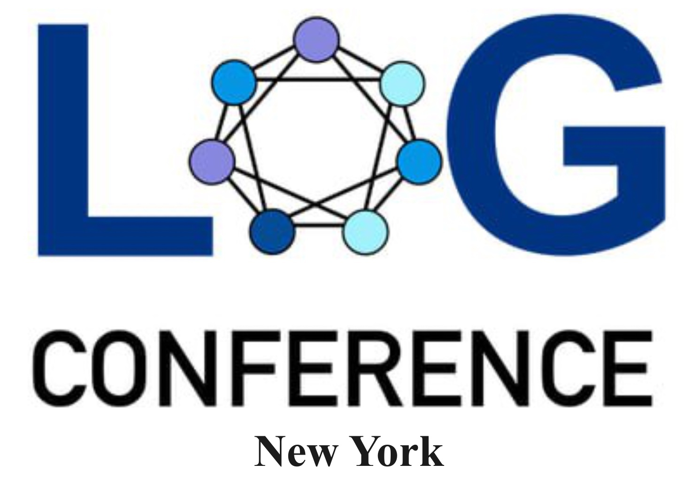
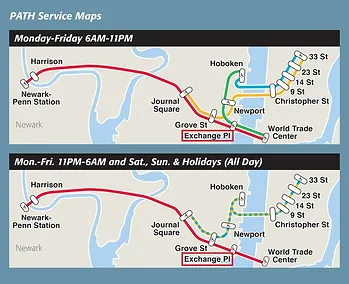
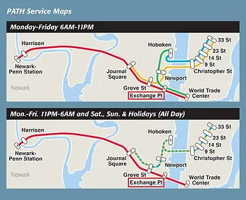

About
Welcome to the official website for the New York meetup of the Learning on Graphs Conference, an annual research conference that covers areas broadly related to machine learning on graphs and geometry.
This event serves as a local branch of the main conference, providing an environment for researchers in this field to convene and foster discussion and social connections.
The main objective of this event is to build an open and diverse community in the greater NYC area with students, professors, and industry researchers interested in machine learning and graphs (e.g., computer science, discrete math, operations research, etc.), geometry (e.g., applied math, physics, neuroscience, biology, etc.), and networks (e.g., network science, social science, etc.).
Explore last year event's recorded sessions here.
Learning Meets Geometry, Graphs, and Networks
📅 21st November – 22nd November 2024 📍 Jersey City

Important dates:
- Registration deadline: November 14th 2024
Registration
Registration for this event is open until Nov 14th, 2024. Registration is free but required for attendance.
In addition, participants can optionally submit a poster for presentation during the poster session. Examples of research areas that are within scope for the poster session are described below under Subject Areas.
To register for participation or to submit a poster, please fill out this form.
Subject Areas
The following is a summary of LoG’s focus, which is not exhaustive. If you doubt that your paper fits the venue, feel free to contact logmeetupnyc@gmail.com!
- Expressive graph neural networks
- GNN architectures (e.g., transformers, new positional encodings, etc.)
- Statistical theory on graphs
- Causal inference and causal discovery (e.g., structural causal models, causal graphical models, etc.)
- Geometry processing and optimization
- Robustness and adversarial attacks on graphs
- Combinatorial optimization and graph algorithms
- Graph kernels
- Graph signal processing and spectral methods
- Graph generative models
- Scalable graph learning models and methods
- Graphs for recommender systems
- Knowledge graphs
- Neural manifold
- Self-supervised learning on graphs
- Structured probabilistc inference
- Graph/Geometric ML (e.g., for health applications, security, computer vision, etc.)
- Graph/Geometric ML infrastructures (e.g., datasets, benchmarks, libraries, etc.)
Schedule
TBA.
Speakers
-

Qitian Wu
Time: TBA
Affiliation: MIT/Broad Institute
Abstract:
Biography:
-

Shubhendu Trivedi
Time: TBA
Affiliation: MIT
Abstract:
Biography:
-

Guan-Horng Liu
TBA
Affiliation: Meta
Abstract:
Biography:
-

Jiequn Han
Time: TBA
Affiliation: Flatiron Institute
Abstract:
Biography:
-

Bryan Perozzi
Time: TBA
Affiliation: Google Research
Abstract:
Biography:
-

Clayton Sanford
Time: TBA
Affiliation: Google Research
Abstract:
Biography:
-

Rajesh Jayaram
Time: TBA
Affiliation: Google Research
Abstract:
Biography:
-

Nathan Frey
Time: TBA
Affiliation: Genentech
Abstract:
Biography:
-

Di Wang
Time: TBA
Affiliation: Morgan Stanley
Abstract:
Biography:
-

Serina Chang
Time: TBA
Affiliation: Microsoft Research, UC Berkeley
Abstract:
Biography:
-

Giorgos Kollias
Time: TBA
Affiliation: IBM Research
Abstract:
Biography:
Spotlight Talks
Organizers


Sponsors

The Venue
The New York LoG Meet Up will take place in the “NJIT@Jersey City Campus”. The NJIT@JerseyCity is located on the 36th floor of 101 Hudson Street on the Waterfront of Jersey City. The building occupies an entire block bordered by Montgomery Street, Hudson Street, York Street, and Greene Street. “Directions from Google Maps”

Public Transportation
101 Hudson Street is located across the street from Exchange Place station for the PATH and the Hudson-Bergen Light Rail. The PATH at Exchange Place is served by the Newark-World Trade Center and Hoboken-World Trade Center lines. The light rail at Exchange Place is serviced by two routes: the Tonnelle Avenue - West Side Avenue and the Hoboken Terminal - 8th Street service routes. The NY Waterway Paulus Hook Terminal is located at the end of Sussex Street at the Hudson River Waterway three blocks away (10 minutes walking distance) from 101 Hudson Street. There are three ferry routes from NYC: Pier 11/Wall Street., Downtown/Brookfield Place, and Midtown/W. 39th Street.
 

All building visitors must check in with the security and receive a temporary pass. Walk to the middle elevator bank to access the 36th floor. Exit the elevator and see signs for NJIT@JerseyCity. Turn right to the double glass door entrance to NJIT@JerseyCity (Suite 3610).
Parking and Building Entry
To access the parking garage continue along Hudson Street to York Street; turn right onto York Street and continue towards Greene Street or approach the parking garage by driving along Greene Street and taking a left onto York Street. The entrance to the garage will be on the left.
The entrance to the parking garage is the last "garage door" entrance before the intersection of York and Greene Streets: Google Image of Parking Deck
To enter the parking garage push the button on the ticket dispensing machine; retrieve (and keep!) the ticket to release the arm of the gate to continue driving up the steep ramp to Level 2. Parking is available on Levels 2 - 5. Keep the parking ticket to process payment and to be able to exit the parking deck. Once parked, see signs for the elevators to the lobby.
Exit the garage elevator onto the rear lobby of 101 Hudson Street. Turn right to walk down the corridor towards the front of the building.
All building visitors must check in with the security and receive a temporary pass. Walk to the middle elevator bank to access the 36th floor. Exit the elevator and see signs for NJIT@JerseyCity. Turn right to the double glass door entrance to NJIT@JerseyCity (Suite 3610).